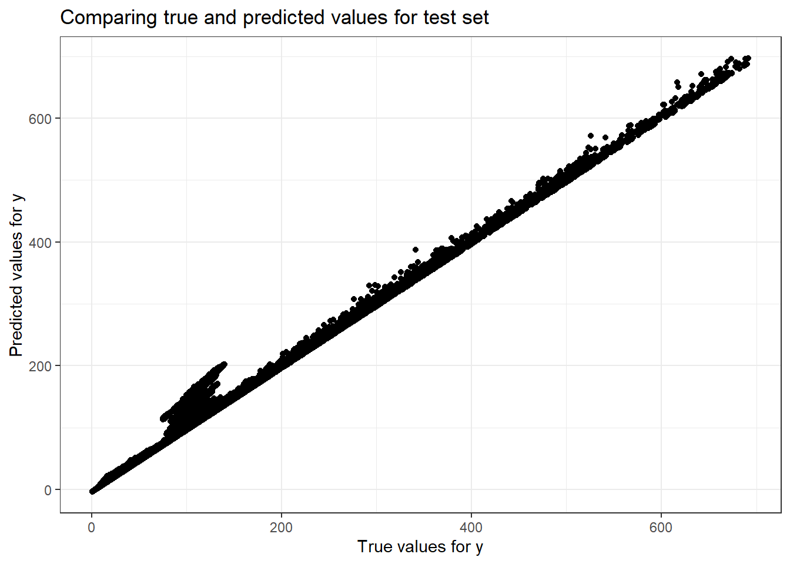
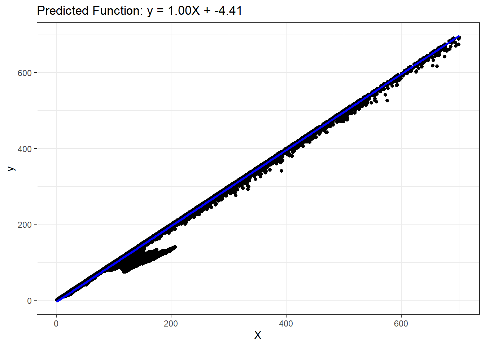

Here we ware going to go through various regression modeling technique for our dataset big_tech_stock_price.csv to answer the following question.
How do daily opening prices, trading volumes, and historical trends influence the adjusted closing prices of stocks?
# Reading the datasetstock_prices <- readr::read_csv('https://raw.githubusercontent.com/rfordatascience/tidytuesday/master/data/2023/2023-02-07/big_tech_stock_prices.csv')
Rows: 45088 Columns: 8
── Column specification ────────────────────────────────────────────────────────
Delimiter: ","
chr (1): stock_symbol
dbl (6): open, high, low, close, adj_close, volume
date (1): date
ℹ Use `spec()` to retrieve the full column specification for this data.
ℹ Specify the column types or set `show_col_types = FALSE` to quiet this message.
To find the appropriate features that will be needed for our training and testing set we will find a co-vairiance matrix for the same.
# First we will select the columns that are useful for answering the questionstock_prices_col <- stock_prices[, 3:7] %>%drop_na()head(stock_prices_col)
# Correlation Matrixround(cor(stock_prices_col),digits =3# rounded to 2 decimals)
open high low close adj_close
open 1.000 1.000 1.000 1.000 0.994
high 1.000 1.000 1.000 1.000 0.995
low 1.000 1.000 1.000 1.000 0.994
close 1.000 1.000 1.000 1.000 0.995
adj_close 0.994 0.995 0.994 0.995 1.000
Now as we want our target variable to be adjusted close price (adj_close), so we will look for co relation between that variable and other features.
Looking into the correlation matrix we can find high and close have highest value of co relation, and according to the question asked for the dataset we will use highest price of the day as our X and use adj_close as our Y i.e. our target variable.
Multiple Linear Regression
Starting with modeling
Step 1: Split Input Data into Training and Test Sets
# Train/test split, As we need to split data instances <-nrow(stock_prices_col)numTrain <-20# number of training instancesnumTest <- instances - numTrainset.seed(123) # For reproducibilityX <- stock_prices_col$highy <- stock_prices_col$adj_closedata <-tibble(X = X, y = y)split_obj <-initial_split(data, prop = numTrain/instances)# Extract train and test datatrain_data <-training(split_obj)test_data <-testing(split_obj)# Extract X_train, X_test, y_train, y_testX_train <- train_data$Xy_train <- train_data$yX_test <- test_data$Xy_test <- test_data$y
This will give us Training and Testing set for both X and y attributes of our dataset.
Step 2: Fit Regression Model to Training Set
# Create a linear regression model specificationlin_reg_spec <-linear_reg() |>set_engine("lm")# Fit the model to the training datalin_reg_fit <- lin_reg_spec |>fit(y ~ X, data = train_data)
Step 3: Apply Model to the testing set
# Apply model to the test sety_pred_test <-predict(lin_reg_fit, new_data = test_data) |>pull(.pred)
Step 4: Evaluate Model Performance on Test Set
# Plotting true vs predicted valuesggplot() +geom_point(aes(x =as.vector(y_test), y = y_pred_test), color ='black') +ggtitle('Comparing true and predicted values for test set') +xlab('True values for y') +ylab('Predicted values for y')

Above is the plot for comparing true values and the predicted values.
# Prepare data for yardstick evaluationeval_data <-tibble(truth =as.vector(y_test),estimate = y_pred_test)# Model evaluationrmse_value <-rmse(data = eval_data, truth = truth, estimate = estimate)cat("Root mean squared error =", sprintf("%.4f", rmse_value$.estimate), "\n")
Above using tibble() we will create data frame containing y testing and y predicted values naming them truth and estimate. After that calculated Root mean square error value and R-squared value. As we can see higher R-squared values, this indicates model fitting is good.
### Step 4: Postprocessing# Plot outputsggplot() +geom_point(aes(x =as.vector(X_test), y =as.vector(y_test)), color ='black') +geom_line(aes(x =as.vector(X_test), y = y_pred_test), color ='blue', linewidth =1) +ggtitle(sprintf('Predicted Function: y = %.2fX + %.2f', slope, intercept)) +xlab('X') +ylab('y')

Effect of correlated attributes
here, we will try find how regression model is affected due to correlation , here we will create additional variables and assign them different columns.
Now we will compute both training and test errors of the model, we will show the resulting model and sum of absolute weights of regression coefficients.
# A tibble: 3 × 4
Model Train_error Test_error Sum_of_Absolute_Weig…¹
<chr> <dbl> <dbl> <dbl>
1 -324.73 X + 1775.36 129. 29762. 2202.
2 -106.40 X + 508.98 X2 + 1118.21 118. 18524. 2284.
3 -172.05 X + 569.40 X2 + -623.81… 118. 18586. 2565.
# ℹ abbreviated name: ¹Sum_of_Absolute_Weights
As we can see in the graph after a point of time there is minor changes in test error and also the training error, but in short as we increasing the complexity both the errors are decreasing for our condition, this is a good sign more the data i.e. the complexity we are increasing more accurate predictions we can get.
Ridge Regression
We can use ridge regression which is a type of multiple linear regression which can be used to fit linear model to data by regularized loss function
We will use previously created training set with correlated attributes
# Convert to data frametrain_data <-tibble(y = y_train, X_train4)test_data <-tibble(y = y_test, X_test4)# Set up a Ridge regression model specificationridge_spec <-linear_reg(penalty =0.4, mixture =1) %>%set_engine("glmnet")# Fit the modelridge_fit <- ridge_spec %>%fit(y ~ ., data = train_data)# Make predictionsy_pred_train_ridge <-predict(ridge_fit, new_data = train_data)$.predy_pred_test_ridge <-predict(ridge_fit, new_data = train_data)$.pred# Calculate RMSEcalculate_rmse <-function(actual, predicted) { rmse <-sqrt(mean((actual - predicted)^2)) rmse}# Extract coefficientsridge_coef <-coefficients(ridge_fit$fit)model5 <-sprintf("%.2f X + %.2f X2 + %.2f X3 + %.2f X4 + %.2f", ridge_coef[2], ridge_coef[3], ridge_coef[4], ridge_coef[5], ridge_coef[1])values5 <-tibble(Model = model5,Train_error =calculate_rmse(y_train, y_pred_train_ridge),Test_error =calculate_rmse(y_test, y_pred_test_ridge),Sum_of_Absolute_Weights =sum(abs(ridge_coef)))
Warning in actual - predicted: longer object length is not a multiple of
shorter object length
# Combining the resultsfinal_results <-bind_rows(results, values5)final_results
Here, we can set appropriate hyper parameters, this will help in controlling the sum of absolute weights.
Lasso Regression
If there is model over fitting in any case we can use Lasso Regression , this can help in doing this in better way as compared to Ridge Regression.
# Define the lasso specificationlasso_spec <-linear_reg(penalty =0.02, mixture =1) %>%set_engine("glmnet")# Ensure the data is combined correctlytrain_data <-tibble(y = y_train, X1 = X_train4[,1], X2 = X_train4[,2], X3 = X_train4[,3])# Fit the modellasso_fit <- lasso_spec %>%fit(y ~ ., data = train_data)# Extract coefficientslasso_coefs <- lasso_fit$fit$beta[,1]# Predictionsy_pred_train_lasso <-predict(lasso_fit, new_data = train_data)$.predy_pred_test_lasso <-predict(lasso_fit, new_data =tibble(X1 = X_test4[,1], X2 = X_test4[,2], X3 = X_test4[,3], X4 = X_test4[,4]))$.pred# Create the model stringmodel6 <-sprintf("%.2f X + %.2f X2 + %.2f X3 + %.2f X4 + %.2f", lasso_coefs[2], lasso_coefs[3], lasso_coefs[4], lasso_coefs[5], lasso_fit$fit$a0[1])values6 <-c(model6, sqrt(mean((y_train - y_pred_train_lasso)^2)),sqrt(mean((y_test - y_pred_test_lasso)^2)),sum(abs(lasso_coefs[-1])) +abs(lasso_fit$fit$a0[1]))# Make the results tibblelasso_results <-tibble(Model ="Lasso",`Train error`= values6[2], `Test error`= values6[3], `Sum of Absolute Weights`= values6[4])lasso_results
# A tibble: 1 × 4
Model `Train error` `Test error` `Sum of Absolute Weights`
<chr> <chr> <chr> <chr>
1 Lasso 117.89896036837 18533.7820837902 90.68465895
As we can compare it to the Ridge Regression we can see test error is better as compared to ridge regression.
Hyperparameter Selection via Cross-Validation
Now to pick up the appropriate hyper parameter value alpha, we will use 5-fold cross validation, where the data set is divided in 5 set where each set is used as validation set and others as training sets.